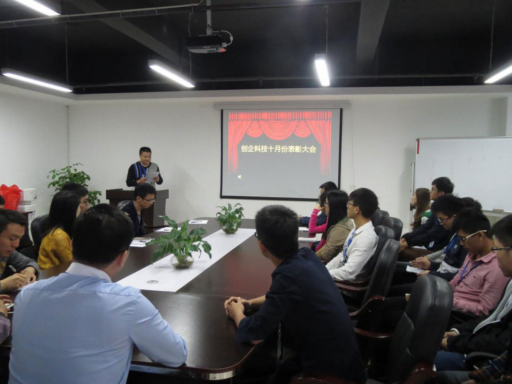

0人浏览
石狮日报8月6日讯 记者从石狮高新技术产业开发区获悉，石狮国家高新区创新创业中心 正逐步完善各项建设，不断加快项目引进步伐，泉州和省级孵化器项目申请工作也正在稳步进行中。截至目前，已有包括福建好士福智能科技有限 公司、闽和信息科技有限公司和华辉医药等在内的20家企业入驻创新创业中心， 其中，石狮市闽和信息科技有限公司、石狮市广汇龙环保设备有限公司相继投产。 石狮日报8月6日讯 记者从石狮高新技术产业开发区获悉，石狮国家高新区创新创业中心 正逐步完善各项建设，不断加快项目引进步伐，泉州和省级孵化器项目申请工作也正在稳步进行中。截至目前，已有包括福建好士福智能科技有限 公司、闽和信息科技有限公司和华辉医药等在内的20家企业入驻创新创业中心， 其中，石狮市闽和信息科技有限公司、石狮市广汇龙环保设备有限公司相继投产。 石狮日报8月6日讯 记者从石狮高新技术产业开发区获悉，石狮国家高新区创新创业中心
附件：照片下载
返回列表